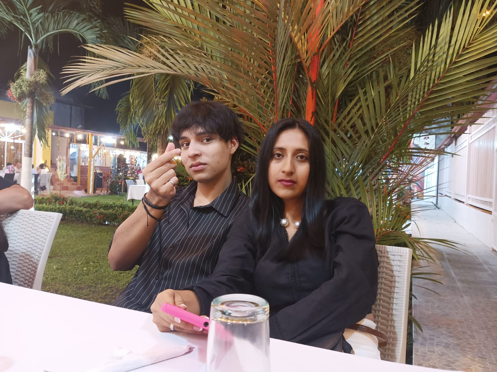
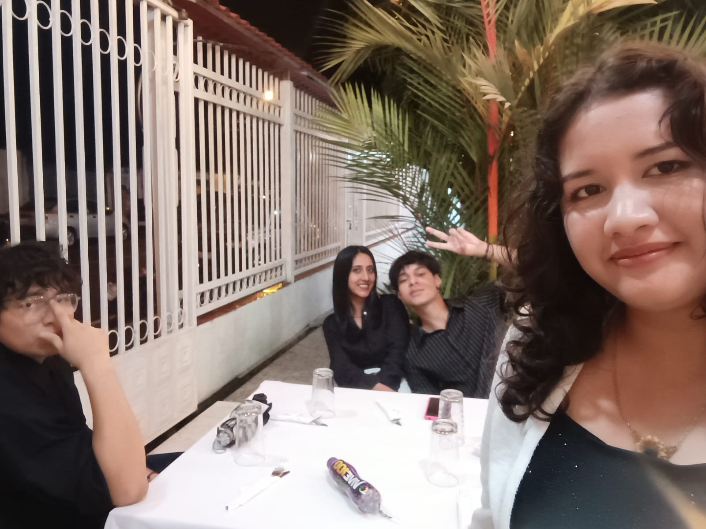
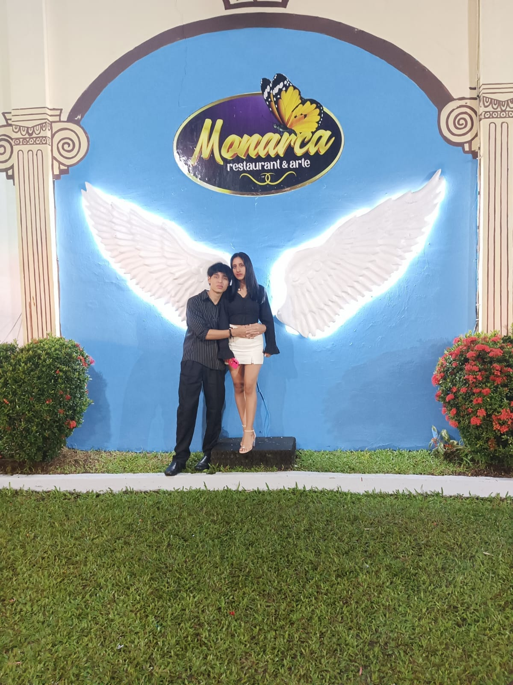
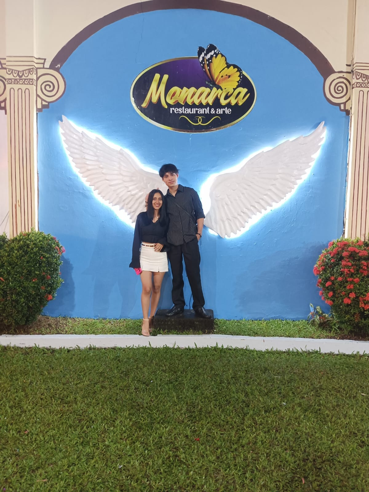
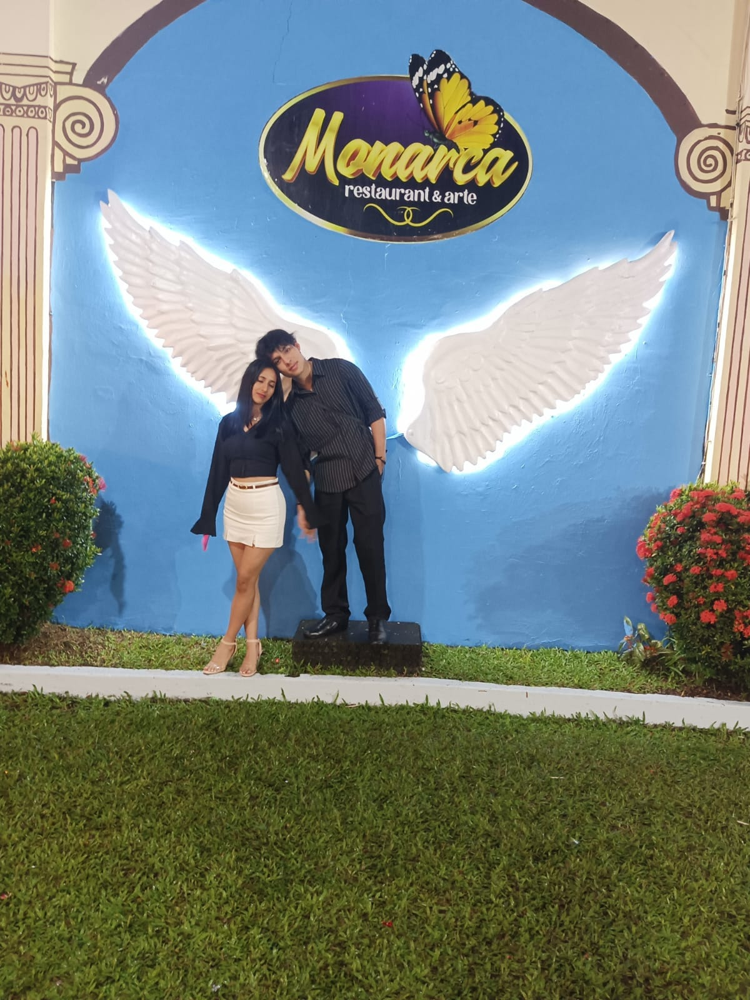
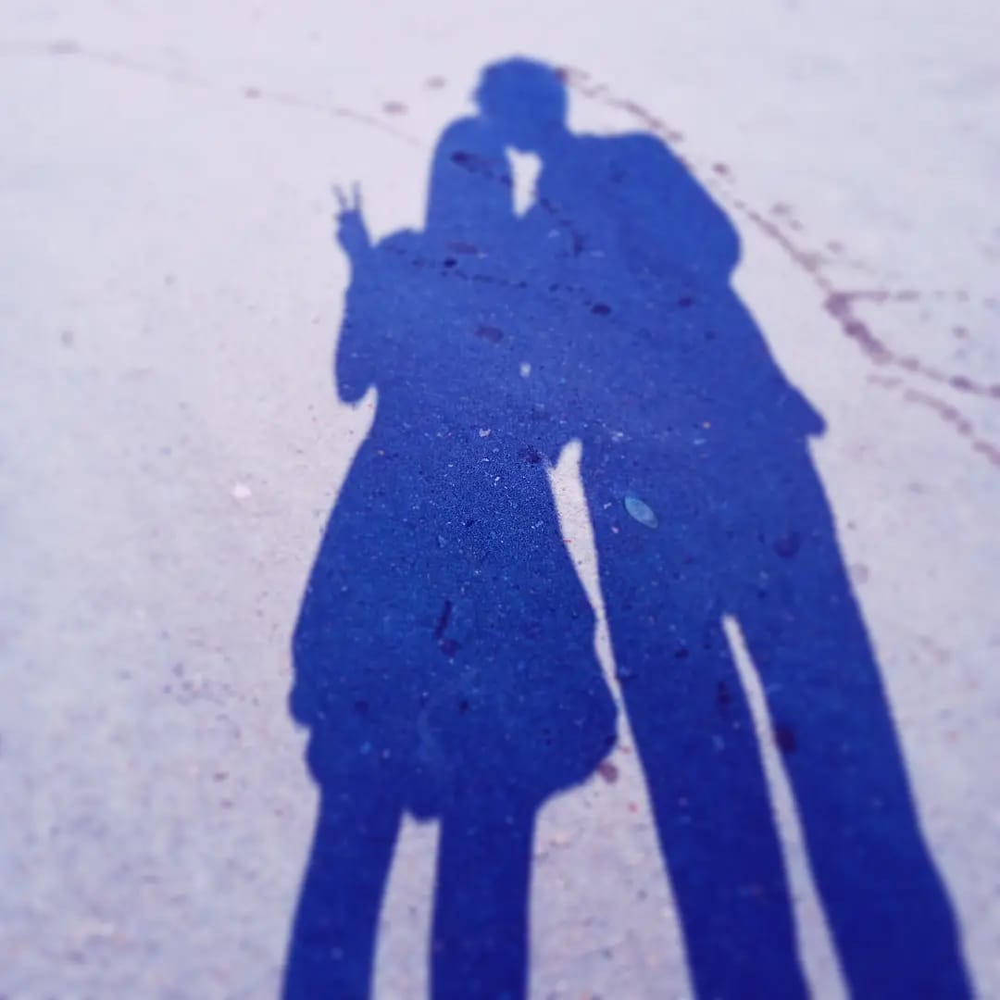
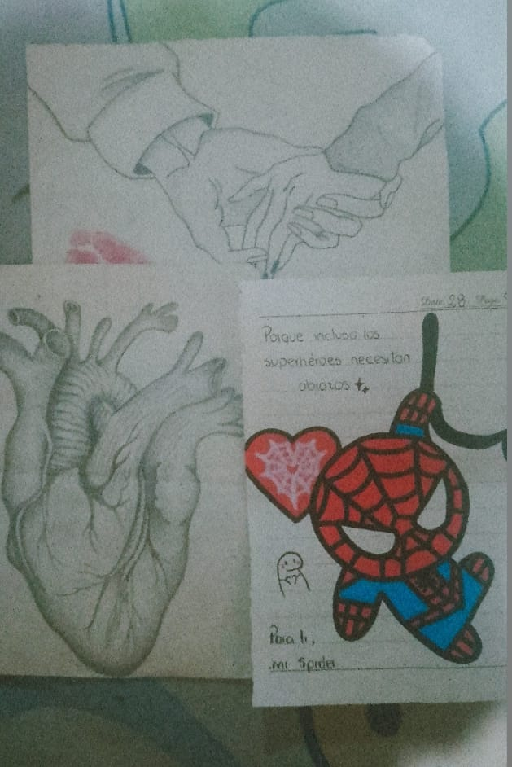
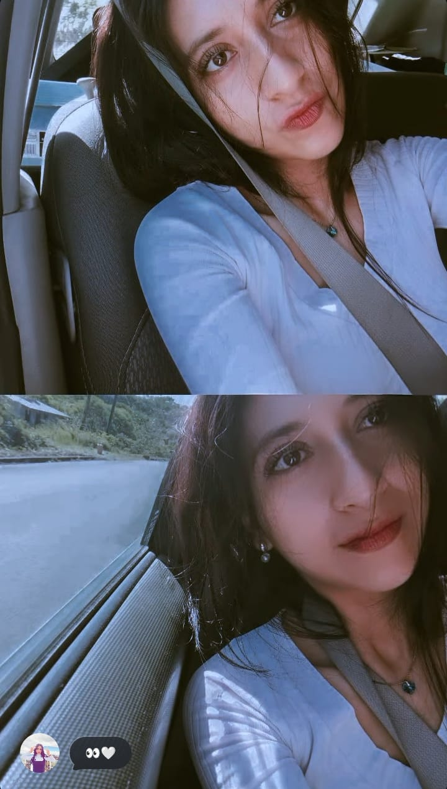
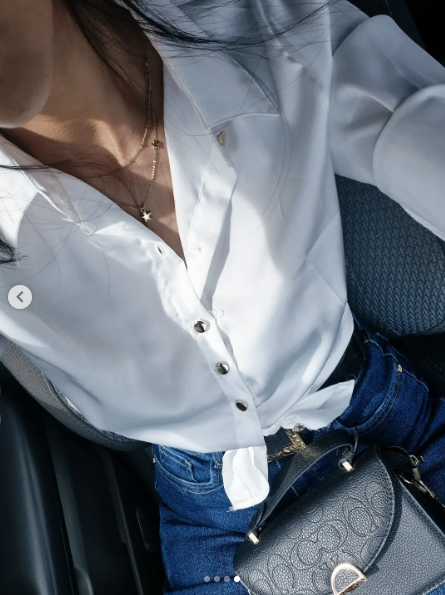

Anécdotas <3
- La cena con tu familia, jajaja me mareé en el viaje y me tocó dormirme y me abrazaste mucho, luego estuve muy nervioso por conocer a tu familia pero terminé divirtiéndome, jugamos uno y repartimos los regalos jajaja fue muy divertido y al final comimos asado :c y regresamos a casa.
- El viaje en el carro, una experiencia inolvidable, fue algo bonito, especial aunque no fue mucho, comimos heladito y me dijeron que solo pedí chocolate y nada de frutas luego se limpió el carro, mientras vimos algunas películas juntos con tu hermana y su esposo.
- Esos pequeños ratos que se volvieron especiales cuando venías a mi casa, era muy especiales muy bonitos, podía estar en tu regazo todo el día y sentirme en paz o cuando te pusiste mi ropa y parecías ladrona jajaj.
Por qué significaste tanto para mi :c
- Tu forma de ser siempre atenta conmigo.
- La dedicación que ponías en todo lo que hacías.
- La calma que transmitías simplemente estando ahí.
- La forma en la que me hacías sentir amado.
- Poder contarte todo sin sentirme juzgado.
- Me hiciste creer mas en mi.
- Tu apoyo incondicional en los momentos difíciles.
- Pude tener fe y creer mas en dios.
- TE AMO.
Galería de recuerdos
Mis recuerdos :'3









:c
- Ojalá haber tenido más fotos, me acuerdo que te dije que tú me olvidarías en un año pero yo jamás te olvidaría y aquí sigo amándote y recordando tus fotos, recordando los mejores momentos, me duele haberte lastimado fui inmaduro no debí de comportarme de esa manera, aprendí de esos errores pero ya es tarde :c igual mientras seas feliz yo seré feliz siempre estarás en mi corazón para siempre :) espero volver a verte algún día y quién sabe volver a enamorarnos? tal vez es mucho pedir y claramente no sucederá pero me gustaría que fuese posible volver a verte o intentarlo aunque es cierto no soy tan madura como me gustaría serlo aun tengo que aprender de mucho pero ahora sé que debo hacer y que no hacer sé cómo reaccionar a ciertos problemas, me gustaría volver a estar contigo te amare siempre :) .